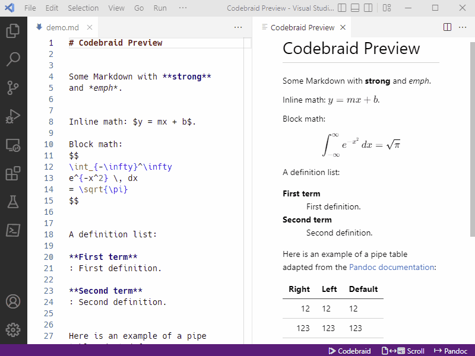
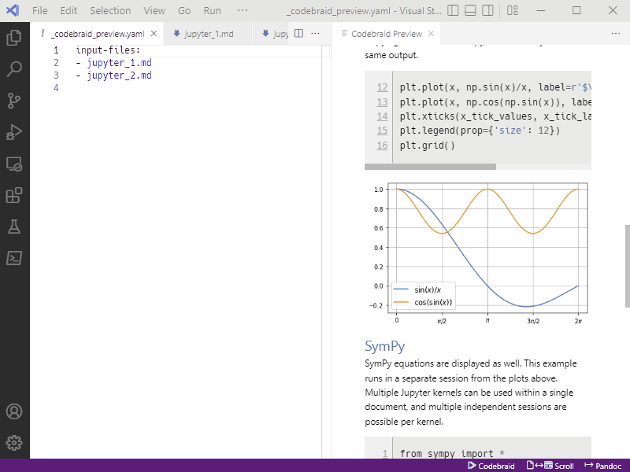

Scroll sync
Codebraid Preview provides full bidirectional scroll sync between the Markdown
source and the preview for Markdown variants based on CommonMark, including
the Pandoc formats commonmark, commonmark_x (CommonMark plus Pandoc
extensions), and gfm (GitHub-flavored Markdown). By default, Codebraid
Preview treats documents as commonmark_x, since it provides
the most features. Scroll sync
is bidirectional by default, but the direction can be toggled or it can be
disabled with the “Scroll” button in the status bar (bottom right).

Codebraid Preview still works with Markdown variants that are not based on
CommonMark, but scroll sync is disabled. To change the Markdown variant
globally, modify the extension setting codebraid.preview.pandoc.fromFormat.
To change the Markdown variant for a single file or all files in a directory
(folder), create a Pandoc defaults file _codebraid_preview.yaml in the
directory, and add an entry from: <markdown_variant_name>.
Multi-file documents
Pandoc can be given a list of files to combine into a single output document.
Codebraid Preview provides scroll sync for multi-file documents. Simply
create a Pandoc defaults file _codebraid_preview.yaml in the same directory
as the document files, and list the files under the key input-files. The
animation below shows a document that is broken into two files, with the
following defaults file:
input-files:
- jupyter_1.md
- jupyter_2.md

Technical summary
Pandoc 2.11.3 was
released in December 2020. It added a sourcepos extension for
CommonMark-based formats. This attaches source location information to
elements in the abstract syntax tree (AST) generated by Pandoc. Codebraid
Preview uses that data to construct a mapping between the Markdown input and
the HTML output that is displayed in the preview. For more details, see the
paper in the SciPy 2022 proceedings.